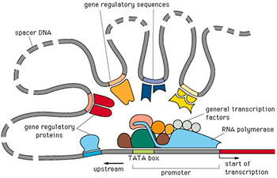

 Transcriptional regulation in eukaryotes. Source.
Understanding gene regulation at the transcriptional level is critical to understanding complex biological systems and human disease. In virtually all organisms gene regulation is mediated by a “regulatory code” in which distinct combinations of specific transcription factors (TFs) collaborate to regulate the expression of individual genes. This code is complex and not readily obvious from sequences alone. It likely involves many cis-regulatory modules (CRMs) that exist both upstream and within genes. Data from the ENCODE and modENCODE projects suggests that the amount of cis-regulatory sequence may exceed that of the genes themselves. In addition, mounting evidence suggests that major differences between individuals and species lies at the level of gene regulation and that changes in cis-regulatory sequences are responsible for these effects. As such, it is important to map and understand how sequence variations in individuals are responsible for mediating differences in gene expression and their phenotypic consequences. The goal of my research is to understand the biological mechanisms underlying transcriptional regulation and how human variation at regulatory regions affects this process.
Regulatory elements are much more difficult to identify than genes and likely account for more variation among individuals than actual coding differences in genes. We use high-throughput genome approaches to identify which regions of the genome are more likely to have some biological function. In particular, we are interested in those regions where transcription factors interact with the DNA and have some regulatory mechanism. We can identify these regions through a number of experimental assays (ChIP-seq, DNase-seq, ATAC-seq, etc.) as well as computational approaches.
The vast amount of high-throughput genomic data available has presented an exciting challenge in the field of computational biology. We seek to integrate these data into a meaningful and interpretable annotation of the genome which allows for various tasks in computational biology such as prediction of regulatory networks, gene expression, and co-regulatory mechanisms.
Identifying and studying elements, including promoters, enhancers, silencers, and insulators, will lead to new therapeutic strategies as the complex regulatory networks are revealed. Up to now the characterization and validation of truly functional regulatory elements has been a low throughput endeavor as each regulatory site is cloned into a reporter assay and tested. We have developed a novel method that performs one of the most common validation assays, transient transfections, in a high-throughput manner by combining it with an innovative sorting and sequencing system. This system, which has been shown to be practical and feasible, will allow for rapid and thorough identification of the method of action of regulatory elements throughout the human genome.
Prevalence of whole-genome sequencing and high-quality annotations of the human genome has started to allow exploration of some of the mechanisms of gene regulation on an organismal scale in humans. Until recently, most efforts have focused on examining the effect of variation in protein coding regions on human phenotype. However, with the release of many whole-genome regulatory annotations, both biochemical and genetic, it has started to become possible to assign putative regulatory function to non-coding DNA. This is particularly significant as a majority of human variation associated with disease falls outside of gene bodies. We attempt to shed light on the effect of these differences by advancing several areas fundamental to human biology. We use computational approaches and functional -omic data and genetic data from the literature to: 1) Identify and predict which variants result in a direct impact on regulatory function through disruption of protein-DNA interactions, and 2) Identify noncoding variants affecting human disease. We expect to be able to accurately predict the function of a large fraction of variation in the regulatory segments of the genome.
In computational biology we are able to leverage many experimental datasets in order to inform our understanding of biology. However, we believe that many of these findings lack confidence without proper experimental validations. We seek to integrate computational work back into the lab to better inform both disciplines through an iterative approach. The success of this approach allows for the use of a wider array of available tools and testing methodologies.
{kind=link}